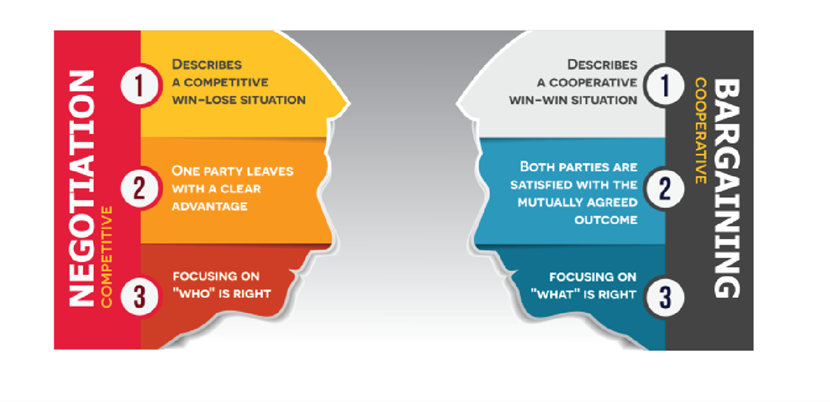
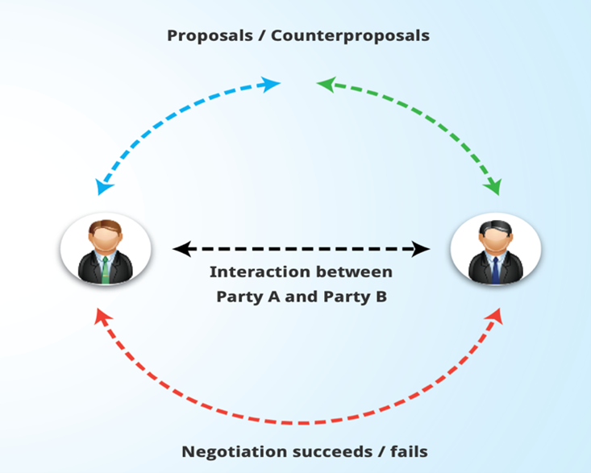

Negotiation谈判
Questions: select the answer you consider to be correct.
Q1:According to research conducted by the Harvard Negotiation Project, which of the following must the parties do in order for negotiation to be successful? 根据哈佛谈判项目的研究，为了谈判成功，各方必须做到以下哪一点？
A.Consider the problem rather than the people 考虑问题而不是人
B.Focus on positions rather than interests. 关注立场而不是兴趣
C.Generate a variety of possibilities before deciding what to do? 在决定做什么之前产生各种可能性
D.All of these. 以上都是
A1: the correct answer is C.
It is suggested that, for a negotiation to be successful, the parties must: 为使谈判取得成功，各方必须： (1) Separate the people from the problem. 将人与问题分开。（需要同时考虑到人和问题） (2) Focus on interests, not positions. 关注利益，而不是立场 (3) Generate a variety of possibilities before deciding what to do. 在决定做什么之前产生各种可能性 (4) Insist that the result be based on some objective standard. 坚持结果以客观标准为依据
Q2:How does negotiation differ from bargaining? 谈判与协商有何不同？
A.In negotiation, the parties endeavor to come to an independent, joint decision concerning the terms of the agreement between them. 在谈判中，双方努力就他们之间的协议条款作出独立的、共同的决定。
B.Negotiation only takes place when resolving a dispute that Is legal in nature. 谈判只有在解决具有法律性质的争议时才进行谈判。
C.Negotiation necessarily involves the use of a third-party adjudicator. 谈判必然涉及使用第三方评判员
D.All of these. 以上都是
A2:the correct answer is A
Unlike the more specific process of bargaining which ‘consists of the presentation and exchange of […] proposals for the terms of agreement on particular issues […] relating to the settlement point on items in the dispute’, negotiation is a form of ‘interaction between disputing parties whereby, without compulsion by a third-party adjudicator, they endeavor to come to an independent, joint decision concerning the terms of agreement on issues between them.’ (与更具体的协商过程不同的是，谈判是一种“争议各方之间的互动，在没有第三方裁决者的强迫下，他们努力就双方之间的问题达成独立的，共同的决定”，而协商是“就特定问题的协议条款提出和交换[…]建议”。)
Q3:Which of the following often prevents negotiation from resolving disputes? 以下哪项经常阻碍谈判解决争议？
A.Negotiation creates high cost and delays. 谈判造成高成本和延迟
B.Parties fear that suggesting negotiation might indicate weakness. 当事人担心提议谈判可能会展现弱点
C.National legal systems often preclude settlement outside the courts. 国家法律制度往往排除法院以外的解决办法
D.All of these. 以上都是
A3: the correct answer is B.
In the context of dispute resolution, ‘both sides may be reluctant to suggest negotiation first because that might indicate weakness. There is additional hesitation over what the first proposal should be in money damage cases since parties believe it will affect what they may ultimately get or pay out.’ 在解决争端的过程中，“双方可能都不愿意先提出谈判，因为这可能会暗示弱点。在金钱赔偿案件中，由于当事人认为这将影响他们最终可能得到或支付的金额，因此对于第一个提议应该是什么，他们还存在额外的犹豫。”
Congratulations!
You have achieved a basic understanding of the Negotiation process. 你已经对谈判过程有了基本的了解。
You have learned the following: 你学到了以下内容：
[1]Negotiation is the most common dispute resolution technique 谈判是最常见的争议解决方法
[2]Negotiation is a form of interaction between disputing parties where they can reach a solution to the issues between them without the involvement of a third party 谈判是有争议的双方之间的一种互动形式，在没有第三方参与的情况下，他们可以就他们之间的问题达成解决方案
[3]One of the most remarkable methods of negotiation is the so-called principled negotiation or negotiation on the merits, which was developed at the Harvard Negotiation Project. 最有名的谈判方式是所谓的原则式谈判或叫是非曲直谈判，在哈发谈判项目中发展出来的
[4]Negotiation consists of a sequence of proposals (P) and counterproposals (CP) that continue until agreement is reached or negotiations break down. 谈判包括一系列建议（P）和反建议（CP），直到达成协议或协议破裂。
What is the aim of this module?
Understanding how the process of Negotiation works and what the outcomes of this mechanism are. 了解谈判的过程是如何运作的，以及这种机制的结果是什么。
Negotiation is as old as human society itself. It is ‘the most common dispute resolution technique’. Whether taking place in the dusty streets of a village market or in the polished executive suites of an urban tower, it typically consists of ‘a sequence of proposals (P) and counterproposals (CP) that continue until agreement is reached or negotiations break down’. 谈判和人类社会本身一样古老。这是“最常见的争议解决技术”。无论是在乡村市场尘土飞扬的街道上，还是在城市高楼的豪华行政套房里，谈判通常都由“一系列提案（P）和反提案（CP）组成，直到达成协议或谈判破裂”。
Negotiation allows the parties 'to do better than they could otherwise' accomplish on their own terms. 谈判可以让各方“做得更好”，而不是按照他们自己的条件“完成”
Unlike the more specific process of bargaining which ‘consists of the presentation and exchange of […] proposals for the terms of agreement on particular issues […] relating to the settlement point on items in the dispute, negotiation is a form of ‘interaction between disputing parties whereby, without compulsion by a third-party adjudicator, they endeavor to come to an independent, joint decision concerning the terms of agreement on the issues between them.’ (与更具体的协商过程不同的是，谈判是一种“争议各方之间的互动，在没有第三方裁决者的强迫下，他们努力就双方之间的问题达成独立的，共同的决定”，而协商是“就特定问题的协议条款提出和交换[…]建议”。)
Negotiation谈判：competitive （竞争的）
1)Describes a competitive win-lose situation 描述了一个竞争的输赢局面
2)One party leaves with a clear advantage 一方当事人以明显的优势离开
3)Focusing on “WHO” is right 关注“谁”是对的
Bargaining 协商：cooperative (合作的)
1)Describes a cooperative win-win situation 描述一个合作双赢的局面
2)Both parties are satisfied with the mutually agreed outcome 双方都对双方商定的结果感到满意
3)Focusing on “WHAT” is right 关注“什么”是对的
Negotiation: 谈判
In recent years, a considerable body of scientific literature has been developed in an attempt to model the negotiation process. One of the most remarkable methods of negotiation is the so-called principled negotiation or negotiation of merits, which was developed at the Harvard Negotiation Project. 近年来，大量的科学文献试图对谈判过程进行模拟。最引人注目的谈判方法之一是所谓的原则式谈判或是非曲直谈判，这是在哈佛谈判项目中发展起来的。
Principled negotiation: 原则式谈判/Negotiation of merits: 是非曲直谈判 The method called principled negotiation or negotiation on the merits was developed by the leaders of the Harvard Negotiation Project. 这种方式，被称为原则式谈判或叫是非曲直谈判，由哈佛谈判项目的领导发展起来的
It suggested that, for a negotiation to be successful, the parties must: 为使谈判取得成功，建议各方必须：
(1)Separate the people from the problem 将人与问题分开
(2)Focus on interests, not positions 关注利益，而不是立场
(3)Generate a variety of possibilities before deciding what to do 在决定做什么之前产生各种可能性
(4)Insist that the result be based on some objective standard. 坚持结果以客观标准为依据
Negotiation will ideally produce an outcome which will be better ‘than the best available alternative that could be reached without negotiating. The parties’ interests should be well-satisfied and joint gains and mutually advantageous trade-offs should be diligently sought, explored and put to use’. 理想情况下，谈判产生的结果比 “不谈判就能达成的最佳替代方案更好。要充分满足各方利益，努力寻求、探索和利用共同收益和权衡。”
The negotiated outcome normally ‘represents a compromise between the parties’ initial demands and expectations, although there may be, in part or whole, the joint creation of some new terms not originally conceived of by either party’. 谈判结果通常“代表了双方最初的要求和期望之间的妥协，尽管可能部分或全部地共同制定了一些双方最初都没有想到的新条款”。
If parties are unwilling or unable to reach a compromise on a critical point the negotiation will typically fail. 如果双方不愿意或无法在关键问题上达成妥协，谈判通常会失败。
In the context of dispute resolution, ‘both sides may be reluctant to suggest negotiation first because that might indicate weakness. There is additional hesitation over what the first proposal should be in money damage cases since parties believe it will affect what they may ultimately get or pay out’. 在解决争端的过程中，“双方可能都不愿意先提出谈判，因为这可能会暗示弱点。在金钱赔偿案件中，由于当事人认为这将影响他们最终可能得到或支付的金额，因此对于第一个提议应该是什么，他们还存在额外的犹豫。”
Nevertheless, by negotiating (either formally or informally, directly or indirectly), parties can routinely resolve conflicts without having to resort to using the traditional legal system. 然而，通过谈判（正式或非正式，直接或间接），当事人可以常规地解决冲突，而不必诉诸于传统的法律制度。
Negotiation consists of a sequence of proposals (P) and counterproposals (CP) that continue until agreement is reached or negotiations break down. 谈判包括一系列建议（P）和反建议（CP），直到达成协议或谈判破裂
This mechanism involves an interaction between disputing parties whereby, without compulsion by a third-party adjudicator, they endeavor to come to an independent, joint decision concerning the terms of agreement on the issue between them. 这一机制涉及争端各方之间的相互作用，在没有第三方评判员强迫的情况下，他们努力就他们之间的问题的协议条款作出独立，共同的决定。